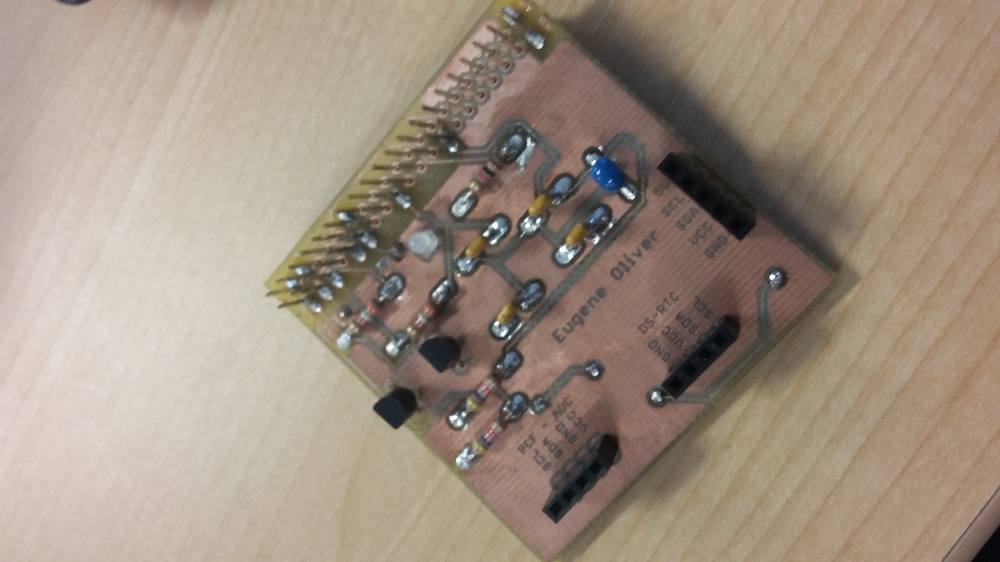

This page will give you the main instructions and provide help if you want to create your own Lifelines: Breathalyzer. Myself (Eugene Oliver), along with my group members Ryan Do, and Adriene Almacen created chose to create this project because we feel like this is a good step to take in order to fix the problem of drinking and driving. Instead of people thinking they're okay to drive with alcohol in their body, they can use our project to see if there is a great amount of alcohol in their body along with seeing their heart rate. It's a cheap alternative, and isn't too hard to make yourself!
Using a gas and a heartbeat sensor, users can plug those into a PCB and use a raspberry pi to display the readings on either a computer or phone when the app is ready and completed!
Required parts and materials for this project are shown below. Most of these parts are pretty cheap which makes this project not that expensive, but that is because I already had a raspberry pi, electronic parts kit, and the PCB kit was paid for as a part of our tuition. It is important to mention that these prices do vary considering where you get them, you don't need to buy the exact same parts as me.
| Item | Quantity | Cost | Supplier & Part Number |
|---|---|---|---|
| Raspberry Pi 3 Starter Kit | 1 | $119.99 | (Canakit) Amazon - B01CCF9BYG |
| MQ-3 Sensor | 1 | $11.95 | Amazon.ca - B01ISMV6G8 |
| XD-58C Sensor | 1 | $18.99 | (JutaTech) Amazon.ca - B01AUVMFIS |
| Electronics Parts Kit | 1 | $119.99 | Humber - SKU #163 |
| Jumper Wires (120 pack) | 1 | $19.99 | (Elegoo) Amazon.ca - B01EV70C78 |
| Solder Kit | 1 | ~$40.00 | Humber |
| Soldering Iron | 1 | ~$20.00 | Humber |
| Power Cables/Connectors | 1 | Comes with Raspberry Pi and Parts Kit | Humber/Amazon |
Again, these are just the parts and prices for the things I bought. Prices may change over time, but my total comes to around $350.
Lifelines: Breathalyzer is a project that I worked on with my group members in our last year in Computer Engineering Technology. In the 5th semester of this program a lot of work had to be juggled with other courses, which is why as a whole it took about 15 weeks to complete everything. If you work on this continuously with no other tasks in your way, it shouldn't take that long considering you do everything correctly! In this chart below, I break down how much time was taken on each main task of the project.
| Thing To Be Done | Time Taken To Complete (Approx.) |
|---|---|
| Looking for and Purchasing Parts + Delivery | 1.5 hours + 2 weeks |
| Assembling case and setting up Raspberry Pi | 1 hour |
| Editting your custom PCB | 30 minutes |
| Soldering/Testing/Troubleshooting your PCB | 3 hours |
| Creating a case for your project | 1 hour |
| Testing/calibrating the sensors | 2 hours |
| Setting up the project | 5 minutes |
After breaking down the parts of the project, it is pretty easy to tell that it's not a very time consuming project to complete. If you are very committed to this project then it shouldn't be very difficult to complete this in these time frames.
To keep things simple, for mechanical assembly I'm going to break up the parts into main sections. First I'll talk about how you have to set up the raspberry Pi, what needed to be done in order for it to work properly. Next I'll talk about creating your own PCB, and soldering it. After that I will talk about connecting the parts together and powering it up. Lets get started!
These steps might vary if you get different parts, my Raspberry Pi starter kit included a lot of things to make the process a lot easier.Once you receive your Raspberry Pi, you can start by connecting a keyboard and mouse to the USB ports. Next go ahead and push in the SD card included, and use the HDMI connector and connect it to a monitor so you will be able to see the display. Lastly, plug in the power adapter to turn on the raspberry pi. Things will flash on the screen and text will flood a black terminal, but eventually it will stop, allowing for input. The most important thing to do is run the command "sudo apt-get update" which is really important because it will give the newest and most stable updates for your raspberry pi. "Startx" should be used to get into the desktop. Connect to the internet in whichever way is best, and download the python file I created and put it in an easy place to find (found below). Locate it in a terminal and compile it using "python lifelines.py".
Next thing to start working on would be the PCB. The PCB provided to me by the Humber Prototype Lab is what I used to hold majority of my project. First download the program EAGLE, and the required board and schematic file which is provided below. The schematic and board file are just a generic student file so the name will need to be changed. Lastly I went to the prototype lab and asked what else they needed for me to print my board, and they asked for these two files and the rest was done by them!
When soldering the PCB, Vlad and Kelly at the Prototype Lab really helped out. If you had a question on how to test it or where to solder some things, they would help you out. Majority of the soldering was done while looking at the reference model they had at the lab, I also used the solder and soldering iron they had there so I didn't need to buy my own. Once done, you should consult to Vlad and Kelly to make sure you've done it right, they will show you how to properly test it to make sure it works. Below is just a visual of what my PCB looked like when it was completed.

When the Raspberry Pi is setup, and the PCB is finished and soldered you can now set up the rest of the project. Get the Modular Sense Hat and connect it properly into the header labelled PFC-ADC on the board. Take the MQ-3 sensor, connnect the positive to 5V, negative to ground and analog signal pin to the AIN1 pin on the Modular Sense Hat. Take the Heartbeat sensor, connect positive to VCC in the header labelled DS-RTC on the board, negative to ground, and signal ping to the AIN2 pin on the Modular Sense Hat. Lastly, using the 24-pin GPIO header on the PCB board, connect it to the Raspberry Pi firmly so it's set (MAKE SURE THE PI IS OFF!). Now we can move to the power up.
Once everything above was completed, the only thing left is power up. Do a quick check and make sure everything is wired correctly, and make sure that there are no problems. Go ahead and plug the USB's into the Raspberry Pi, power it on and see if it works. You can see if the sensors are being detected by using the command "i2cdetect -y 1" on a terminal and you should see 48, which corresponds to the Modular Sense Hat! This is the big and final step, if everything is working correctly, the code should work without any problems. So go look for the code that you previously downloaded, compile it and run it using "python lifelines.py".
For unit testng there wasn't a lot of things to be done. The unit testing I did was the individual sensors. To test the MQ-3 sensor, compile the file again but this time edit out the print statement for the heartbeat sensor and run it again, now you should only see a continuous loop for the MQ-3 reading, you can now blow into it. Considering you're not intoxicated the readings shouldn't go up while the code is running. You can now take a rubbing alcohol bottle, or to be safer you can just use a hand sanitizer bottle and squeeze out some air into the sensor, then the reading should start to go up. For the heartbeat sensor all you need to do is compile it again but now comment out the MQ-3 gas sensor text line and uncomment the heart beat sensor, run it and now put a finger onto the green light and watch the screen. If done correctly the reading should drop down to a number lower than 10, and then give you a more accurate reading of something between 70-80 after five or so seconds. If both of these work properly, you're good to go to the final step!
Now that we're at the last step and we're sure that everything is working properly, all you have to do is uncomment all the lines of code that you previously commented out from the original code of mine, and run it! If everything works properly the code should work and you should be getting successful readings from both sensors if working properly. Also code for the LED on the PCB board is included so now, the LED will be red if a impossible reading for the heart beat is detected, so if the reading is less than 60 or greater than 100, the reading is inaccurate or your heart rate is not stable.
To end this project off you can create your own case using the program CorelDraw, which allows you to create a sketch for your case. Below I've provided the sketch of what my case looks like. I created a fairly generous case in terms of space, but if you want to create a smaller case then go right ahead! The own personal touch is nice, and you can add just about anything. Once done you can save the file you created on CorelDraw into a pdf, and bring it to the prototype lab and see if everything is correct for it to print. It will just take a couple of minutes, then you'll have everything done and in your hands. All you have to do is put the Lifelines: Breathalyzer into the case, and make sure everything is where you want it! That's it!
If you follow this guide step by step and everything seems to be working at the end... then yes, this project is very reproducible! In a few days, you can have your very own Lifelines: Breathalyzer product, the only thing that would keep you from doing it much faster would be the delivery dates on items. After putting in the hard work, you can use it to impress people with and hopefully use it yourself to keep you far away from drunk driving! You yourself can help reduce the problem of drinking and driving just by making this, so get started!